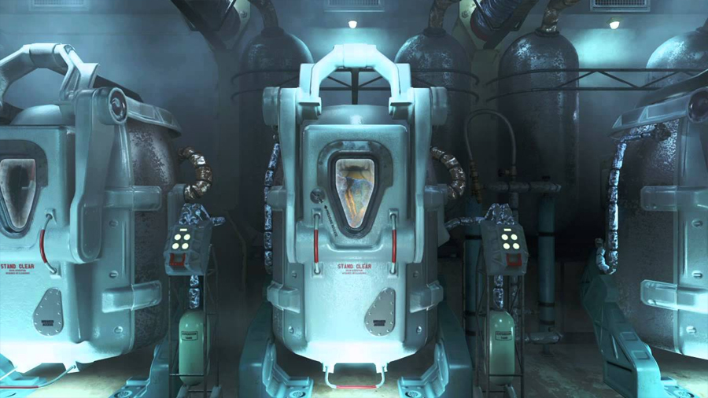
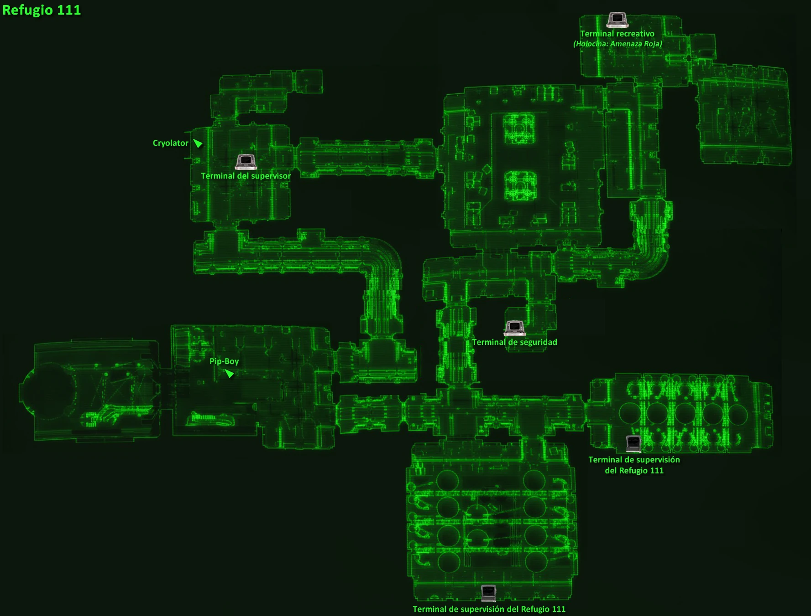
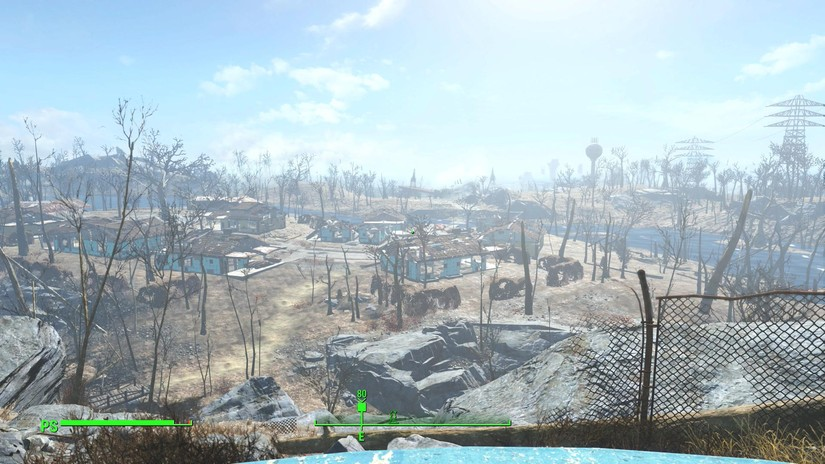

FALLOUT4-WEB
FALLOUT4-WEB
FALLOUT4-WEB
FALLOUT4-WEB
El jugador es el Único Superviviente del Refugio 111, quien emerge 210 años después de la Gran Guerra. Antes a eso, hay un breve momento de gameplay durante la era de la pre-guerra, donde el jugador vive con su esposa e hijo. Experimentamos unos leves momentos de la vida de nuestro personaje antes del inevitable apocalipsis nuclear. Interactuamos con Codsworth, nuestro robot flotante, y vemos a nuestro retoño, Shane. Luego recibimos la visita del representante de Vault-Tec justo a tiempo. Conseguimos un espacio en nuestro refugio local minutos antes de que llegue el holocausto nuclear
Cuando se produce el holocausto, segundos después de que se vaya el de Vault- Tec, tenemos que ir hasta el refugio siguiendo el camino que nos marca el mapa. Tras meternos en la cámara criogénica, vemos unos desagradables instantes finales antes de hacer un paréntesis en el tiempo de más de dos siglos
Casi 210 años después despertamos en las instalaciones, ahora desiertas y llenas de cadáveres, con una primera imagen muy desagradable. Si abrimos la cámara y hablamos con nuestra esposa obtenemos la alianza. Tenemos que salir de la cámara 111 y descubrir el mundo del juego. Para ello tenemos que movernos siguiendo las indicaciones lineales, aprendiendo por el camino a golpear cuerpo a cuerpo y a disparar gracias a los habituales enemigos estándar.
Una vez recorridas las laberínticas instalaciones, interactuamos con el terminal para abrir la salida, y vemos por primera vez la luz del sol en el mundo post-apocalíptico de Fallout 4.
El jugador asume el papel del protagonista, quien comienza una búsqueda para encontrar a su hijo perdido y descubre una trama más profunda que involucra a varias facciones en la región de Boston. Durante su viaje, el jugador se encuentra con diferentes grupos, como el Instituto (un grupo de científicos con tecnología avanzada), la Hermandad del Acero (una orden militar tecnológicamente avanzada), la Commonwealth Minutemen (un grupo de milicianos que protegen a los colonos comunes) y los Ferrocarrileros (un grupo dedicado a liberar a los sintéticos del control del Instituto).